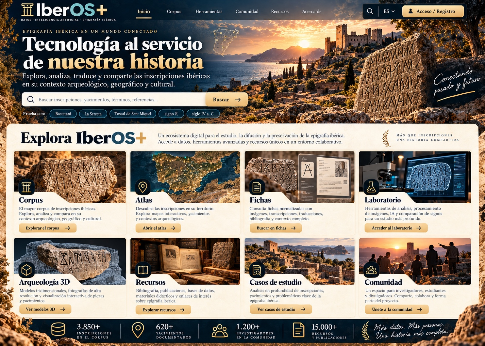

Plomo de Tivissa
śalaiaŕkisteŕokan
Qué podrás descubrir: lectura editorial, relación con śalir, hipótesis interpretativa y límites de la evidencia.
Transliteración editorial · significado no demostrado
Examinar esta ficha →
Empieza con casos reales: contempla la documentación de la pieza, sigue su transcripción y distingue lo que sabemos de lo que todavía investigamos. Las lecturas en caracteres latinos no son traducciones.
śalaiaŕkisteŕokan
Qué podrás descubrir: lectura editorial, relación con śalir, hipótesis interpretativa y límites de la evidencia.
Transliteración editorial · significado no demostrado
Examinar esta ficha →]itiatu:ban:kutur:biteŕokan
Qué podrás descubrir: variantes de lectura, fuentes publicadas y alcance de la hipótesis científica.
Transliteración editorial · variante pendiente de cotejo
Examinar esta ficha →